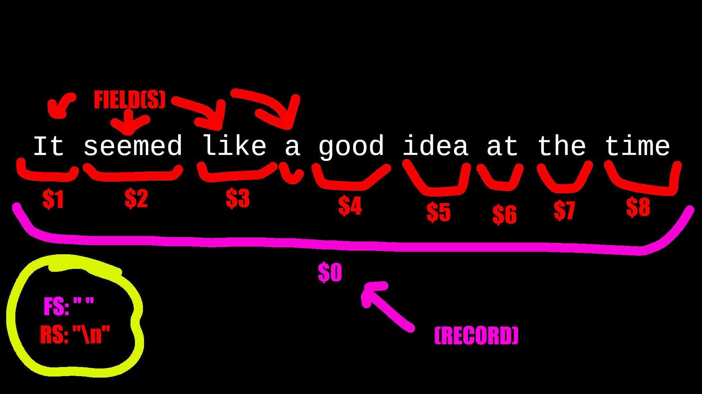

awk“It seemed like a good idea at the time.”
— Brian Kernighan
awk: General purpose programmable filter that handles text as easily as numbers,
sed.
awkv.s.sed:
awkcan process fields of text.
sedcan only process things line-by-line.- Convenient numeric processing.
- Variables and control flow in the actions.
- Convenient way of accessing fields within the lines.
- Flexible printing.
- Built-in arithmetic and string functions.
- C-like syntax.
Running
awk:
awk 'program' inputfile(s), orawk 'program', orawk -f program_file inputfile(s)Examples: Running
awk# Files $ awk 'program' input-file1 input-file2 ... $ awk -f program-file input-file1 input-file2 ... # Redirection and pipes $ ls | awk ‘program’ > foo # Stdin $ awk 'program'
- The
-fflag is useful because it lets us save large programs to their own files rather than making large multi-line shell commands.
Etymology: Named after inventors (Aho, Weinberge, Kernighan)
Variants:
nawk: New awk, the new standard forawk
- Designed to facilitate large awk programs
gawk: Freenawkclone from GNU.
- On Linux,
awkis often aliased to GNUawk.
Remember:
awkis a filter, it doesn’t alter input files by itself.
awk ProgramGeneral Structure of an
awkProgram:BEGIN {action} pattern {action} ... pattern {action} END {action}
An awk program consists of:
On Patterns and Actions:
awk searches a set of files for patterns.sed.{}).Pattern-Action Structure:
awk scans a sequence of input lines (records), it goes through them one-by-one searching for ones that match the pattern.Default Pattern and Action Behavior:
- Default pattern is to match all lines.
- Default action is to print to
stdout.
Pattern: Selector that determines whether an action should be executed.
//). /bazinga/name == "UNIX Tools", x > 0, etc.&& and ||. /bazinga/ && (x > 0)Note:
!negates the pattern.
Action: Performed on every line that matches its respective pattern.
Example: An example
awkcommand that filters for HTML files from ls.ls | awk ' /\.html$/ { print } '
- The pattern being used is the
/\.html$/regex, the action is{ print }
Two kinds of awk variables:
$0, $1, $2, …, etc.)FS, OFS, RS, etc.)Example: Creating a user-defined variable (prints number of lines in input)
BEGIN { sum = 0 } { sum ++ } END { print sum }
Important: All numbers in
awkare floating-point numbers, expressions like5/3won’t get truncated into integers!
(highest precedence to lowest)
x ^ y or x ** y: Exponentiation **’ is equivalent to ‘^’.2 ^ 3’ has the value eight;- x: Negation+ x: Unary Plus x * y: Multiplicationx / y: Division 3 / 4’ has the value 0.75.x % y: Remainderx + y: Additionx - y: SubtractionConcatenation: Combines strings.
Example: String concatenation
$ awk BEGIN { x = "HELLO" print (x " WORLD") } HELLO WORLD
Note on Undefined Behavior: The order of evaluation of expressions used for concatenation is undefined in the
awklanguage, for example—BEGIN { x = "don’t" print (x (x = " panic")) }—It’s not defined whether the expression
(x = " panic")is supposed to be evaluated before or after the value ofxis retrieved to produce the concatenated value.
- So the result could be “
don't panic” or “panic panic” depending on theawkimplementation.
- Most
awkimplementations will “get it right”, but this shouldn’t be relied on.- Basically, if something goes wrong, you probably need to unintuitively wrap something in parentheses to prevent something from being improperly interpreted.
Assignment: Expression that stores a value in a variable.
Examples: Using the assignment operator
$ awk ' BEGIN { thing = "food" predicate = "good" message = "this " thing " is " predicate print message foo = 1 foo = foo + 5 print foo foo = "bar" print foo } ' this food is good 6 bar
++ and --: Increment and Decrement
++ or -- before or after the variable. (pre v.s. post-increment/decrement)Examples: Using increment and decrement operators
x = 3 x++ print x
- Prints
4.x = 4 x-- print x
- Prints
3.
Pre-Increment/Decrement (
++x/--x) v.s. Post-Increment/Decrement (x++/x--)
++x: Increment x. Returns the new value of x (x+1).--x: Decrement x. Returns the new value of x (x-1).x++: Increment x. Returns the old value of x.x--: Decrement x. Returns the old value of x.Whether you use pre-or-post increment/decrement doesn’t matter unless you’re doing wacky stuff like using the return values of the increment and decrement operators (e.g.,
print ++xversusx++; print x)
- Another reason to not use the return values of the increment and decrement operators to reduce your LOC by one is that the outcomes of edge cases are implementation-defined (rel: undefined behavior), so you may have off-by-one errors when your gigabrain command (e.g.,
print x += ++x + x++) is run on a different version ofawk.Examples: Using the increment operator
“Doctor, it hurts when I do this!
Then don’t do that!”
— Groucho Marxx = 5 print ++x
- Prints
6(demonstrating pre-increment).x = 5 print x++
- Prints
5(demonstrating post-increment).x = 6 print x += x++
- May print
12or13, depending on your implementation.

RS, NR)RS: Stores the record separator.
awk processes inputs one line at a time. awk’s definition of a “line”.NR: Stores the number of the current record.
Examples: Using
NR(number of records) $ awk ‘ { if (NR > 100) { print NR, $0; } } ‘
- Prints all records (lines) after the first 100, prefixed by their original line number.
$ awk ‘ { if (NR % 2 == 0) { print NR, $0; } } ‘
- Prints all records (lines) that are even-numbered, prefixed by their original line number.
FS, NF, Positional Variables, OFS, ORS)FS: Stores the field separator. Can be multiple characters.
FS=":", then awk will split a line into fields whenever it sees the : symbol.-F option to set the field separator through a command-line flag, but it can only be a single character. awk script, however, not only can you use multiple-character field separators, but you can even change the field separator (at most once per line)NF: Stores the number of fields.
$digit: Positional variable that lets you access fields.
$0: The entire line.$1: The first field.$2: The second field.$3: The third field.$…: etc.Note: A positional variable isn’t a special variable, but a function triggered by the dollar sign.
OFS: Stores the output field separator.
print command is used with commas like { print $1, $3 }, the output gets separated by the output field separator when printed.ORS: Stores the output record separator.
Example: Changing the field splitter
$ cat file.txt ONE 1 I TWO 2 II #Colons THREE:3:III FOUR:4:IV FIVE:5:V #Spaces SIX 6 VI SEVEN 7 VII $ awk '{ if ($1 == "#Colons") { FS=":"; } else if ($1 == "#Spaces") { FS=" "; } else { print $3 } }' file.txtI II III IV V VI VII
- The script outputs the third field of every line, changing the field splitter as appropriate.
- For the first two lines, the default field splitter is whitespace, so when it falls through the ifs and lands on
print $3, it grabs the third field correctly.- On line 3, the field splitter is changed to colons (
:) conditionally by the check for a line whose first field is “#Colons” (if ($1 == "#Colons") {)- Lines 4—5 have their third field get printed by
print $3- On line 6, the field splitter is conditionally changed to space (“
”) by the check for the line with the first field containing “#Spaces”.- Line 7—8 get their third field printed out as expected.
Example: Printing fields and using
OFSRecall: The default pattern is to perform an action on all lines, and the default action is to print to
stdout.
- We often prefer to out the output field separator (e.g.,
print $1,$3) instead of using concatenation (e.g.,print $1 " " $3).{ print }
- Print all read input lines to
stdout.{ print $0 }
- Print all read input lines to
stdout.
- (Because
$0is the positional variable for the whole input line.)$ awk ' BEGIN { { print "Hello","World" } }' Hello World
- Print “
Hello World” with the print command.$ awk ' BEGIN { OFS=", " { print "Hello","World" } }' Hello, World
- Print “
Hello, World” with the print command by changing the output field separator.
Example: Using output record separator
BEGIN { ORS="\r\n" } { print }
- This filter adds a carriage return to all lines, before the newline character.
FILENAME: Stores the name of the file being read.
"") if stdin or pipes were used to send data to awk.Example: Using
FILENAME$ awk ' BEGIN { f = ""; } { if (f != FILENAME) { f = FILENAME print "Now reading:", f } } ' file.txt file2.txt file3.txt Now reading: file.txt Now reading: file2.txt Now reading: file3.txt
- Prints the filename of
- (We use
fas a flag to prevent printing this message more than once per file (if (f != FILENAME)))
printfFormat:
printf(format)
Format:printf(format,argument...)
awk uses the printf function to do formatted output like C.
Examples: Using
printf$ awk ' { printf("%s\n", $0) } ' file.txt ONE 1 I TWO 2 II #Colons THREE:3:III FOUR:4:IV FIVE:5:V #Spaces SIX 6 VI SEVEN 7 VII
- Print each record followed by a newline.
$ awk ' { printf("%s (hello!) \n", $0) } ' file.txt ONE (hello!) TWO (hello!) #Colons (hello!) THREE:3:III (hello!) FOUR:4:IV (hello!) FIVE:5:V (hello!) #Spaces (hello!) SIX (hello!) SEVEN (hello!)
- Print each record followed by “
(hello!)” and a newline.
| Specifier | Meaning |
|---|---|
%c | ASCII Character |
%d | Decimal integer |
%e | Floating Point number (engineering format) |
%f | Floating Point number (fixed point format) |
%g | The shorter of e or f, with trailing zeros removed |
%o | Octal |
%s | String |
%x | Hexadecimal |
%% | Literal % |
| Sequence | Description |
|---|---|
| ASCII bell (NAWK/GAWK only) | |
| Backspace | |
| Formfeed | |
| Newline | |
| Carriage Return | |
| Horizontal tab | |
| Vertical tab (NAWK only) |
awk patterns are good for selecting specific lies from the input for further processing.
Examples:
$2 >= 5 { print }
- Selection by comparison.
$2 * $3 > 50 { printf(“%6.2f for %s\n”, $2 * $3, $1) }
- Selection by computation.
$1 == "NYU" $2 ~ /NYU/
- Selection by text content.
$2 >= 4 || $3 >= 20
- Combinations of patterns
NR >= 10 && NR <= 20
- Selection by line number.
awk variables:
Example:
{ HOURS_WORKED = $3 HOURS_WORKED > 15 ( x = x + 1 ) } END { print x, " employees worked more than 15 hours." }
- Count number of records where field 3 was larger than 15.
{ HOURLY_WAGE = $2 HOURS_WORKED = $3 pay += HOURLY_WAGE * HOURS_WORKED } END { print “Employee Statistics:” print “- Total pay is:”, pay print “- Average pay is:”, pay/NR }
- Calculate total and average pay.
Overview:
| Control Statement | Description |
|---|---|
| If Statement | Conditionally execute some awk statements. |
| While Statement | Loop until some condition is satisfied. |
| Do Statement | Do specified action while looping until some condition is satisfied. |
| For Statement | Another looping statement, that provides initialization and increment clauses. |
| Switch Statement | Switch/case evaluation for conditional execution of statements based on a value. |
| Break Statement | Immediately exit the innermost enclosing loop (for, while, or do while). |
| Continue Statement | Skip to the end of the innermost enclosing loop. |
| Next Statement | Stop processing the current input record. |
| Nextfile Statement | Stop processing the current file. |
| Exit Statement | Stop execution of awk. |
More on
ifstatement: (Syntax)The
elsekeyword needs to either be on its own line—x=64 if (x % 2 == 0) print "x is even" else print "x is odd"—Or the contents need to be surrounded by braces—
x=64 if (x % 2 == 0) { print "x is even" } else { print "x is odd" }—Or a semi-colon must be used to separate the body of the then statement from the else statement.
x=64 if (x % 2 == 0) print "x is even"; else print "x is odd"
More on
whileanddo-while: (Examples)BEGIN { i=1 while (i <= 3) { printf("%s", i) i++ } }
- Prints
1 2 3.BEGIN { i=1 do { printf("%s ", i) i++ } while (i <= 10) }
- Prints
1 2 3 4 5 6 7 8 9 10
More on
for: (Examples)BEGIN { for (i = 1; i <= 3; i++) printf("%s ", i) }
- Prints
1 2 3BEGIN { for (i = 1; i <= 100; i *= 2) print i }
- Prints every even number between 1—100 on a new line.
for (i in username) { print username[i], i; }
- Prints every item in an array.
More on
switch: ExampleNote: Control flow in switch statements work like they do in C.
- One a match to a case is made, the case statement bodies execute until a
break,continue,next,nextfile,exit, or the end of the switch statement itself.NR > 1 { printf "The %s is classified as: ",$1 switch ($1) { case "apple": print "a fruit, pome" break case "banana": case "grape": case "kiwi": print "a fruit, berry" break case "raspberry": print "a computer, pi" break case "plum": print "a fruit, drupe" break case "pineapple": print "a fruit, fused berries (syncarp)" break case "potato": print "a vegetable, tuber" break default: print "[unclassified]" } }
- Large switch statement to categorize strings.
More on
break: (Example)num = $1 for (divisor = 2; divisor * divisor <= num; divisor++) { if (num % divisor == 0) break } if (num % divisor == 0) printf "Smallest divisor of %d is %d\n", num, divisor else printf "%d is prime\n", num
- Find the smallest divisor of the first field of every record.
More on
continue: (Example)BEGIN { for (x = 0; x <= 20; x++) { if (x == 5) continue printf "%d ", x } print "" }
- Prints
0 1 2 3 4 6 7 8 9 10 11 12 13 14 15 16 17 18 19 20
More on
next: ExampleThe
nextstatement forcesawkto immediately stop processing the current record and go on to the next one.NF != 4 { printf("%s:%d: skipped: NF != 4\n", FILENAME, FNR) > "/dev/stderr" next }
- Don’t process any lines that only have 4 fields.
- Very rudimentary data validation.
More on
exit: ExampleBEGIN { if (("date" | getline date_now) <= 0) { print "Can't get system date" > "/dev/stderr" exit 1 } print "current date is", date_now close("date") }
- Print the system date, or file with error code 1 if it couldn’t be found.
| Name | Function | Variant |
|---|---|---|
cos | cosine | GAWK,AWK,NAWK |
cexp | Exponent | GAWK,AWK,NAWK |
cint | Integer | GAWK,AWK,NAWK |
clog | Logarithm | GAWK,AWK,NAWK |
csin | Sine | GAWK,AWK,NAWK |
csqrt | Square Root | GAWK,AWK,NAWK |
catan2 | Arctangent | GAWK,NAWK |
crand | Random | GAWK,NAWK |
csrand | Seed Random | GAWK,NAWK |
| Function | Variant |
|---|---|
index(string,search) | GAWK,NAWK,NAWK |
length(string) | GAWK,NAWK,NAWK |
split(string,array,separator) | GAWK,NAWK,NAWK |
substr(string,position) | GAWK,NAWK,NAWK |
substr(string,position,max) | GAWK,NAWK,NAWK |